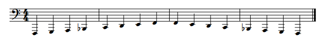

Before using this application you may wish to try it out first. In this guide you will be able
to generate your own results using a provided recording of a piano. To generate a score with your own
recordings simply select the file for that recording instead.
For this guide you will need:
• A musical recording (an example one is provided below.)
Download the following file:
Once the file has successfully downloaded, Go to the home page and click on the choose file option.
This sample uses the default settings, set the tempo at 120bpm, the time signature to 4/4 and the minimum division to 𝅘𝅥
Click on generate and after a short while the page will refresh and produce the result:

These results may look incorrect. However, they are the correct pitches just in a lower octave.>